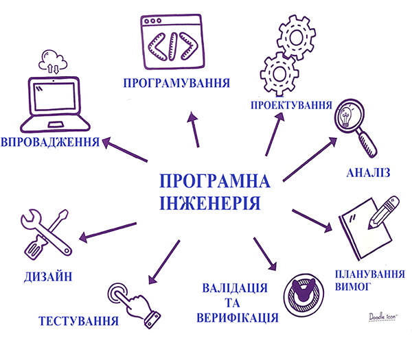

Програмна інженерія
Програмна інженерія — це застосування системного, вимірюваного підходу до розробки, використання та супроводу програмного забезпечення, та дослідження цих підходів, тобто застосування принципів інженерії до програмного забезпечення. Вперше термін «програмна інженерія (англ. software engineering)» був використаний в 1968 році на конференції з програмної інженерії, що була організована Науковим комітетом NATO.
Інженерія програмного забезпечення
Акцент у програмі за спеціальністю «Інженерія програмного забезпечення» робиться на здобутті навичок та знань з розробки програмного забезпечення та ґрунтується на здатності випускників здійснювати дослідницьку та інноваційну діяльність під час виробничої, технологічної, наукової діяльності на будь-яких підприємствах і в установах, пов'язаних з розробкою програмного забезпечення.
Цикл професійної підготовки:
- Математичні основи теорії ігор
- Статистичні методи оцінювання, у тому числі курсовий проект
- Паралельні інформаційні системи
- Теорія і практика наукових досліджень
Цикл дисциплін спеціалізації:
- Сучасні засоби інформатики та комп'ютерний ринок
- Хмарні (Cloudy-) технології